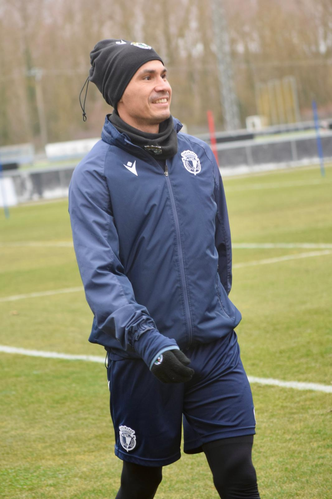

Con un medio del campo vacío por las salidas de Iván Morante y Miguel Ángel Atienza, el llamado a coger el testigo es Pablo Galdames.
A priori, primer medio centro y batuta directriz del Burgos CF, va a adquirir peso e importancia en el equipo. Es ya el gran beneficiado por los movimientos en la parcela de creación y es que, en cuestión de 6 meses, ha pasado de ser la tercera opción a la primera.
Los nuevos acontecimientos solo encuentran beneficios en Galdames. Más allá de lo comentado, otro factor importante a tener en cuenta es la llegada de Sergio Francisco, quien va a impartir un fútbol asociativo que puede potenciar las características del chileno.
La pasada campaña, Luis Miguel Ramis optó como hombre más retrasado del medio del campo por Miguel Atienza, cuya función era cortar cualquier progresión ofensiva peligrosa, así como iniciar la salida de balón metiéndose entre centrales. El planteamiento y la justificación de esta decisión era protegerse en defensa ante cualquier robo o acción inesperada del rival que pudiera corregir Atienza, a pesar de no tener el mejor juego de pies del equipo.
Sin embargo, este año este aspecto va a cambiar con Pablo Galdames. El chileno se caracteriza por tener una visión de juego excepcional y aportar mucho criterio a los balones que pasan por sus pies. Por ello, en iniciación ayudará, y mucho, a que la circulación del balón sea más rápida y el Burgos CF pueda sacar el balón jugado desde atrás de forma limpia, dando importancia a este aspecto, como así quiere el técnico donostiarra.
Es decir, al asumir más riesgos con el esférico, dando prioridad a ello, se puede prescindir de un perfil tan físico y sólido como era el del capitán. En consecuencia, un perfil menos defensivo, pero más valiente, tendrá cabida en el once titular.
Más allá del toque, un pivote debe ser contundente en tareas defensivas y robar balones que puedan lanzar las jugadas ofensivas o parar los ataques rivales. Y es que Galdames también tiene cualidades defensivas que le hacen, en mi opinión, el pivote ideal para el esquema de Sergio Francisco. Hábil con el esférico y listo en los cortes y cruces.
Es por todo ello por lo que Pablo Galdames va a adquirir un importante protagonismo en el conjunto blanquinegro de cara a la temporada 26/27.
Veremos si finalmente se consolida como medio centro referente, pero todo apunta a que lo será.